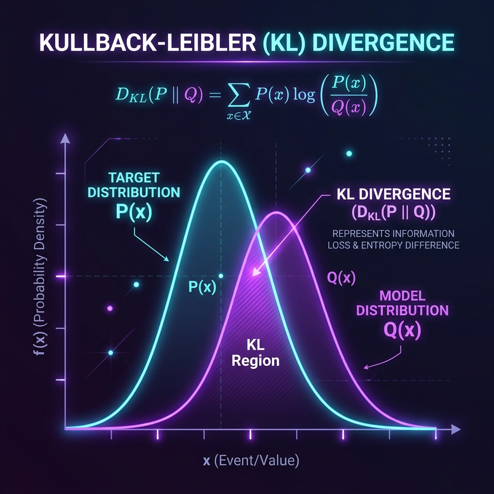

In the heart of modern machine learning lies a recurring question: how close is our model's predictions to reality? When we build generative models like Variational Autoencoders (VAEs) or optimize classifiers, we aren't just comparing single numbers. We are comparing entire, complex probability landscapes.
Enter Kullback-Leibler (KL) Divergence. Also known as relative entropy, KL divergence is an elegant, mathematically rigorous way to measure the difference between two probability distributions. Let's peel back the equations and build a deep, intuitive understanding of this crucial concept.
The Intuition: Coding and "Surplus Surprise"
To understand KL divergence, it helps to take a detour into information theory. Imagine you want to send weather updates to a friend using binary codes. If your city is mostly sunny ($90\%$ of the time) and rarely rainy ($10\%$), you would assign a very short code (like 0) to "sunny" and a longer code (like 1) to "rainy" to save bandwidth. This optimal encoding is designed specifically for your true local weather distribution, $P$.
Now, suppose your friend moves to a city where it rains $50\%$ of the time and is sunny $50\%$ of the time. If they try to use your codebook (designed for distribution $P$) to encode their weather distribution ($Q$), they will transmit more bits than necessary on average.
The Mathematical Formulation
Let's translate this intuition into algebra. For a discrete probability distribution, the KL divergence from $Q$ to $P$ (written as $D_{KL}(P \parallel Q)$) is defined as:
If we are dealing with continuous variables, the sum is replaced by an integral:
Here, $P(x)$ represents the true distribution (the actual reality), and $Q(x)$ represents the approximating distribution (our model's assumption). The ratio $\frac{P(x)}{Q(x)}$ acts as a comparison metric: if $P(x) \approx Q(x)$, the log term is near zero. If they differ significantly, the divergence grows.
A Step-by-Step Numerical Example
Let's work through a concrete calculation. Imagine a highly biased coin where the true probability distribution $P$ of landing on Heads (H) or Tails (T) is:
- $P(\text{Heads}) = 0.9$
- $P(\text{Tails}) = 0.1$
Two data scientists propose different models to approximate this coin:
- Model 1 ($Q_1$): Assumes it is a completely fair coin: $Q_1(H) = 0.5$, $Q_1(T) = 0.5$.
- Model 2 ($Q_2$): Assumes it is slightly biased: $Q_2(H) = 0.8$, $Q_2(T) = 0.2$.
Let's calculate $D_{KL}(P \parallel Q)$ for both models using log base 2 (so our output is in bits):
1. Evaluating Model 1 (Fair Coin Hypothesis)
2. Evaluating Model 2 (Slightly Biased Hypothesis)
The verdict: The KL divergence for Model 2 ($0.053$ bits) is much lower than Model 1 ($0.531$ bits). This mathematically validates that $Q_2$ preserves far more information about our real system than the fair-coin model $Q_1$.
Properties of KL Divergence
Unlike traditional distance metrics (like Euclidean distance), KL divergence behaves in unique ways:
| Property | Behavior | What it means |
|---|---|---|
| Non-Negativity | $D_{KL}(P \parallel Q) \ge 0$ | You can never have "negative" information loss. It is $0$ if and only if $P = Q$. |
| Asymmetry | $D_{KL}(P \parallel Q) \neq D_{KL}(Q \parallel P)$ | The information lost in using $Q$ to model $P$ is not the same as using $P$ to model $Q$. |
| Not a Metric | Violates symmetry & triangle inequality | Because it is asymmetric, it is strictly called a "divergence" rather than a "distance". |
The Crux of Asymmetry
To see why asymmetry matters, calculate the reverse divergence for Model 1:
Notice that $D_{KL}(P \parallel Q_1) = 0.531$ while $D_{KL}(Q_1 \parallel P) = 0.737$. In practice, this asymmetry is powerful. For instance, in variational inference, we choose whether to minimize $D_{KL}(P \parallel Q)$ (forward KL) or $D_{KL}(Q \parallel P)$ (reverse KL) depending on whether we want our model to cover all modes of the data or produce sharp, conservative samples.
Entropy, Cross-Entropy, and KL Divergence
We can unpack the mathematical formula for KL divergence to find a beautiful bridge between different concepts in information theory:
Where:
- $H(P)$ is the Entropy of the true distribution (the minimum bits needed to encode the absolute truth).
- $H(P, Q)$ is the Cross-Entropy (the average bits used when we model $P$ with $Q$).
This equation reveals why Cross-Entropy Loss is the go-to loss function in machine learning classification. Since $H(P)$ depends solely on the true labels (which are fixed constants in training), minimizing Cross-Entropy $H(P, Q)$ is mathematically equivalent to minimizing the KL Divergence $D_{KL}(P \parallel Q)$!
Hands-on Implementation in Python
Here is a complete, clean Python script using NumPy and SciPy to calculate KL Divergence in both bits (log base 2) and nats (log base e):
import numpy as np
from scipy.special import rel_entr
# 1. Define distributions
p = np.array([0.9, 0.1])
q1 = np.array([0.5, 0.5])
q2 = np.array([0.8, 0.2])
# 2. Manual calculation (log base 2, output in bits)
def kl_divergence_bits(p, q):
return np.sum(p * np.log2(p / q))
kl_q1 = kl_divergence_bits(p, q1)
kl_q2 = kl_divergence_bits(p, q2)
print(f"KL(P || Q1): {kl_q1:.4f} bits") # Expected ~0.5311
print(f"KL(P || Q2): {kl_q2:.4f} bits") # Expected ~0.0530
# 3. Using SciPy rel_entr (log base e, output in nats)
# rel_entr(x, y) computes: x * log(x/y)
kl_scipy_q1 = np.sum(rel_entr(p, q1))
kl_scipy_q2 = np.sum(rel_entr(p, q2))
print(f"SciPy KL(P || Q1): {kl_scipy_q1:.4f} nats")
print(f"SciPy KL(P || Q2): {kl_scipy_q2:.4f} nats")Real-world Applications in AI
- Variational Autoencoders (VAEs): In generative models, we compress high-dimensional data into a low-dimensional latent space. We use KL divergence as a regularization term in the loss function to force the learned latent distribution to match a simple, easily sampleable Gaussian distribution $\mathcal{N}(0, I)$.
- Proximal Policy Optimization (PPO): In reinforcement learning, if a policy changes too drastically in a single update step, training can become unstable. Algorithms like PPO and TRPO add a KL penalty to ensure the new policy distribution does not drift too far from the old policy.
- Knowledge Distillation: To compress giant models into lightweight ones, we train a small "student" network to mimic a large "teacher" network. We use KL divergence to match the soft-max probability outputs of the student to the teacher.
Final Thoughts
Kullback-Leibler Divergence is more than just a dry statistical formula; it is a fundamental bridge connecting probability, information theory, and deep learning. By treating comparison as a question of "surplus surprise," KL divergence provides an elegant, physically intuitive framework that allows our models to learn the shapes of reality.